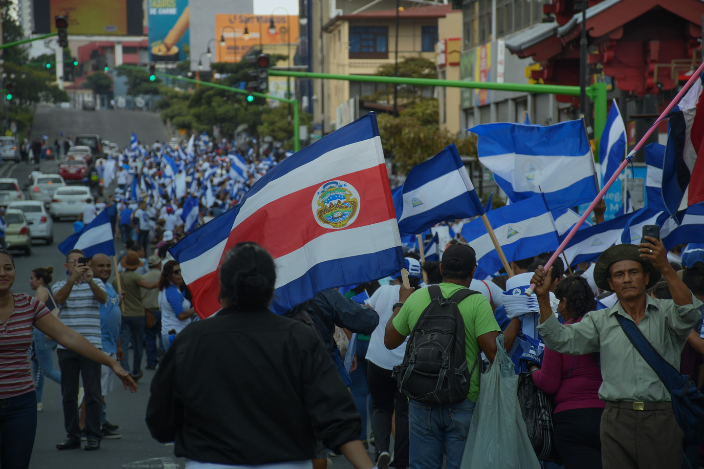

Living between the borders separating countries is an exhausting job that many Nicaraguans undertake on a regular basis. Although people cross for a variety of different reasons, the common denominator is oftentimes the search for a better life in Costa Rica. Escaping political instability, poverty, and sometimes even persecution, almost 300,000 Nicaraguans traverse the border every year. Nevertheless, even with successful immigration, there are many challenges present in the current system which work as a barricade to prevent them from truly settling in.
Rosario is one of the many people who ventured past the Nicaraguan border in search for a better life for her and her children. Despite having worked as a live-in housekeeper in Costa Rica for over a decade and paying taxes to the government, Rosario still feels like a foreigner. To this day, she still gets mocked for her accent, and she still experiences casual racism on a daily basis. While Costa Rica is a country with a reputation for being welcoming and accepting, particularly to tourists, she has come to understand that it is just a facade not meant for people like herself.
The Socioeconomic Border
The tensions and conflict between the Costa Rican and Nicaraguan governments have created yet another cultural and socioeconomic border to be crossed between their own citizens. For Rosario, this border is most apparent during work hours. Her employers barely speak to her beyond the usual pleasantries, and on the rare occasion that they do, she feels like they are looking down on her. Rosario tells me that there’s even been times that she has even been falsely accused of stealing due to her employers misplacing items themselves. She is always the first one to blame. Unfortunately, Rosario’s plight is not uncommon amongst Nicaraguan housekeepers. To her knowledge, many other Nicaraguans endure similar treatment. Moreover, due to the overwhelming difficulty of finding a stable job as an unskilled worker, many Nicaraguan housekeepers decide to stay in abusive households. Ironically, even though Nicaraguans contribute to the economy, and work jobs no one else wants to, they are blamed for taking Costa Rican employment.
Escaping Nicaragua also carries a heavy burden. In Rosario’s case, being able to leave Nicaragua meant that she could finally provide for her family. However, this came at a costly price - in order to keep her current job, Rosario was only allowed to cross the border once a month. This meant that she could barely see her children as they grew up. Leaving Nicaragua meant that she had to provide for her whole family by herself while in a different country. Even so, Rosario tells me that this was a tradeoff that she is willing to make, and she would choose to cross the border again if she had the chance to go back in time. Being able to feed her family and bring a steady stream of income meant that she could provide opportunities to her children that she did not have access to when growing up.
According to Rosario, the negative stigma of being a Nicaraguan in Costa Rica exacerbates the existing wealth gap between the citizens of both countries. She explained that this animosity from Costa Ricans to Nicaraguans is a result of Costa Ricans furthering the myth that Nicaraguans are stealing their potential jobs and opportunities. In reality, a lot of employers illegally hire undocumented Nicaraguans for a lower-than-minimum wage and force them to endure harsh working conditions. The crumbling job market, difficulty of finding jobs and poor living conditions have led Nicaraguans to seek any opportunity that they can take, including frankly inhumane working conditions.
As a Nicaraguan person living in Costa Rica, Rosario made it clear that there is still much progress to be made.
